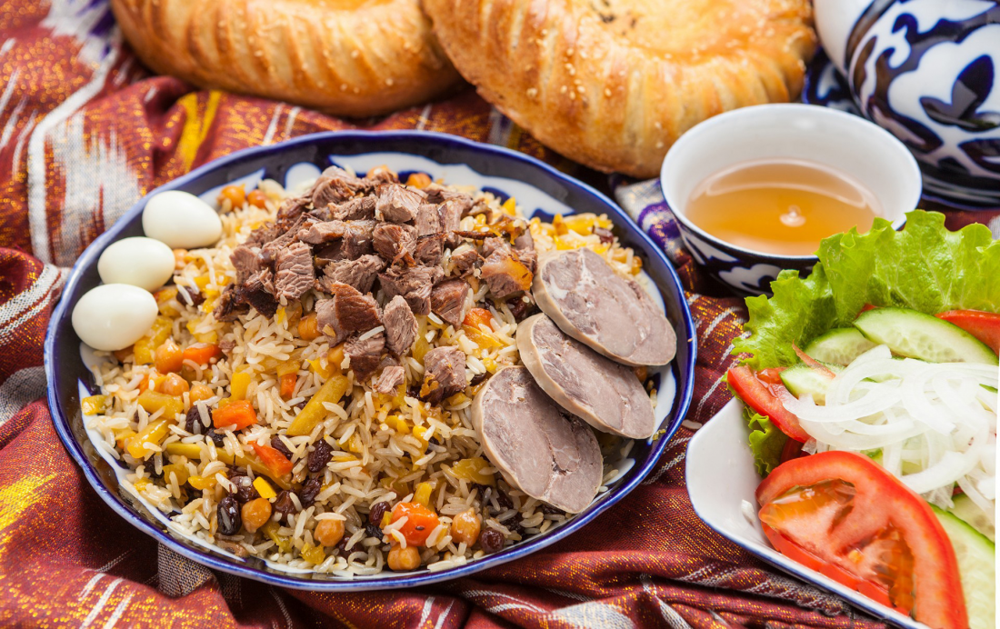

CHAPTER 1
Geographic Location, Population, Name, and Flag
Uzbekistan is a landlocked country situated in Central Asia, sharing borders with Kazakhstan to the north, Kyrgyzstan to the northeast, Tajikistan to the southeast, Afghanistan to the south, and Turkmenistan to the southwest. It is one of only two doubly landlocked countries in the world, meaning it is entirely surrounded by other landlocked nations.
The capital city of Uzbekistan is Tashkent, which is also the country's largest city and an important cultural, political, and economic hub. Uzbekistan has a population of approximately 35 million people (as of 2024), making it the most populous country in Central Asia. The majority of the population consists of ethnic Uzbeks, with significant minorities of Tajiks, Kazakhs, Russians, and other ethnic groups.
Uzbekistan's flag, adopted on November 18, 1991, consists of three horizontal stripes:
Blue symbolizes the sky, water, and the historical legacy of Timur’s empire.
White represents peace and purity.
Green stands for nature, fertility, and Islam.
Thin red stripes separate these colors, signifying the strength of the nation's people and the blood shed for independence. In the top-left corner, a crescent moon and twelve white stars are present, representing Uzbekistan’s Islamic heritage and the twelve months of the lunar calendar, as well as the historical significance of the number 12 in Eastern cultures.
Since gaining independence from the Soviet Union in 1991, Uzbekistan has emerged as a country rich in history, culture, and economic potential, known for its Silk Road heritage and famous cities such as Samarkand, Bukhara, and Khiva.

CHAPTER 2
Places and Buildings
Places and Buildings
Uzbekistan is home to many architectural marvels, showcasing the country’s rich history and deep cultural heritage. From ancient Silk Road cities to grand Islamic structures, these sites reflect the artistic and engineering achievements of Central Asia. Here are some of the most notable places:
Registan Square (Samarkand): One of the most breathtaking landmarks in the world, Registan Square is the heart of Samarkand and a masterpiece of Timurid architecture. The square is surrounded by three grand madrassas—Ulugh Beg, Sher-Dor, and Tillya-Kari—each adorned with intricate tilework, soaring minarets, and majestic domes. The shimmering blue mosaics and symmetrical patterns make Registan a symbol of Uzbekistan’s artistic legacy.
Ichan Kala (Khiva): The historic walled city of Ichan Kala in Khiva is a living museum, recognized as a UNESCO World Heritage Site. Enclosed by thick mud-brick walls, the city contains stunning architectural gems, including the Ark Fortress, the Djuma Mosque (with its distinctive 218 wooden pillars), and the Kalta Minor Minaret, an unfinished yet striking turquoise tower. Walking through Ichan Kala feels like stepping back in time to the era of caravans and silk merchants.
Uzbekistan’s architectural wonders extend beyond these famous sites, with other breathtaking locations such as Bukhara’s Po-i-Kalyan complex, Shahrisabz’s Ak-Saray Palace, and Tashkent’s modern and Soviet-era landmarks, each contributing to the country’s diverse and fascinating architectural landscape.
CHAPTER 3
Technology: Artel and UzAuto Motors
Uzbekistan is advancing in technology and manufacturing, with Artel Electronics and UzAuto Motors leading the way.
Artel Electronics is the country’s largest consumer electronics manufacturer, producing mobile phones, TVs, refrigerators, and air conditioners. It exports to Central Asia, the Middle East, and Europe, contributing to Uzbekistan’s growing tech industry.
UzAuto Motors, one of Central Asia’s largest automakers, manufactures Chevrolet and Ravon vehicles in partnership with General Motors (GM). Based in Asaka, the company focuses on expanding production and entering global markets.
Both companies drive Uzbekistan’s industrial growth, fostering innovation and strengthening the economy. 🚗📱
CHAPTER 4
Traditional Clothing (Gender-Specific)
Uzbekistan’s traditional clothing reflects its rich cultural heritage, influenced by Islamic, Turkic, and Persian traditions. Styles vary by region, age, and occasion, blending vibrant colors, intricate embroidery, and luxurious fabrics.
Men’s Traditional Clothing: Uzbek men typically wear a chapan (a long, quilted robe) over a shirt and trousers, often secured with a belt. The do'ppi (a square, embroidered cap) is a common headpiece, symbolizing cultural identity. These garments, made from silk, velvet, or cotton, feature regional patterns and are worn for ceremonial events and daily life. Footwear includes leather boots or traditional slippers.
Women’s Traditional Clothing: Uzbek women wear atlas or adras dresses, made from silk or cotton with bold, colorful patterns. Over the dress, they may wear a kuylak (long tunic) or a richly embroidered robe. Traditional accessories include gold or silver jewelry, elaborate headscarves, and the do'ppi, often decorated with beads or floral designs. In some regions, women wear paranja, a historical outer cloak, for special occasions.
Traditional clothing continues to be worn during festivals, weddings, and cultural celebrations, showcasing Uzbekistan’s vibrant artistic legacy. 🎨👘
CHAPTER 5
Traditional Holidays and Rituals (Gender Roles in Rituals)
Navruz: The Persian New Year, celebrated on March 21, marks the arrival of spring and symbolizes renewal, prosperity, and unity. Families gather to prepare sumalak (a festive wheat dish), engage in traditional games, music, and dances, and visit elders to seek blessings.
Men often participate in wrestling (kurash), horse games, and setting up yurts, while
Women take a central role in cooking special holiday dishes and organizing family gatherings.
Eid al-Fitr (Ramazon Hayiti): Celebrated at the end of Ramadan, this holiday signifies spiritual renewal and gratitude. Families prepare special meals, give charity (zakot), and visit graves of ancestors to honor their memory.
Men usually attend mosque prayers in the morning, greet relatives, and distribute charity, while
Women prepare festive dishes, set up the holiday table, and welcome guests.
Eid al-Adha (Qurbon Hayiti): This Islamic holiday, known as the Festival of Sacrifice, honors Prophet Ibrahim’s devotion. Families sacrifice livestock and distribute meat to the needy.
Men perform the sacrifice ritual and lead prayers, while
Women prepare traditional dishes and ensure hospitality for visitors.
Independence Day (September 1): Uzbekistan’s most significant national holiday, marking its independence from the Soviet Union in 1991. Celebrated with parades, fireworks, concerts, and speeches, this day fosters national pride and unity.
Men often participate in official ceremonies and sporting events, while
Women engage in cultural performances, exhibitions, and community gatherings.
These holidays highlight Uzbekistan’s rich traditions, where family, community, and cultural heritage play an essential role.
CHAPTER 6
Food: A Feast of Flavors
Plov: The national dish of Uzbekistan, plov (or pilaf), is a hearty mix of rice, meat (typically lamb or beef), carrots, and onions, cooked with a blend of spices such as cumin, garlic, and saffron. This dish is often prepared for large gatherings, weddings, and festivals and holds a deep cultural significance. Plov is usually cooked in a large kazan (cauldron) and served with fresh salads and flatbreads.
Manti: These are steamed dumplings filled with minced meat (often lamb or beef) and onions, sometimes with added pumpkin. Manti is a popular dish for family meals and gatherings, often accompanied by yogurt or garlic sauce.
Shashlik: A favorite street food, shashlik consists of marinated skewers of meat (usually lamb or chicken) grilled over an open flame. This dish is often served with flatbreads and a side of onion salad.
Somsa: These are savory pastries, typically filled with lamb, beef, or vegetables, and baked until crispy. They are often eaten as a snack or appetizer during meals.
Lagman: A noodle dish that combines beef or lamb, vegetables, and hand-pulled noodles in a rich, aromatic broth. It is a comfort food enjoyed throughout the country.
Chuchvara: Similar to manti, chuchvara are smaller, boiled dumplings filled with meat, served in broth or with a side of sour cream.
Uzbek cuisine is not just about food but also about community and hospitality. Sharing a meal, especially plov, with family or friends is an important social tradition in Uzbek culture.

CHAPTER 7
Literature and Fashion
Alisher Navoi: A towering figure in 15th-century literature, Navoi is regarded as the father of Uzbek literature. Writing primarily in Chagatai Turkish, he composed profound poetry and prose that captured themes of love, philosophy, and spirituality. His works, like the famous "Khamsa", had a significant influence on Central Asian and Persian literature.
Abdulla Qodiriy: One of the most prominent 20th-century writers, Qodiriy is best known for his historical novels, particularly "O'tkan Kunlar" (Days Gone By), which paints a vivid picture of life in pre-Soviet Uzbekistan. His work is seen as a foundational part of modern Uzbek literature, often exploring themes of societal change and cultural conflict.
Modern Uzbek Literature: Contemporary Uzbek writers continue to explore the complexities of identity, history, and modernity. With authors such as Hamid Ismailov, their works address global issues while also remaining deeply rooted in the cultural traditions of Uzbekistan. These writers contribute to both national and international literary landscapes, furthering the global appreciation of Uzbek literature.
In fashion, Uzbekistan is known for its vibrant textiles, including silk and cotton, which are integral to both traditional and modern attire. Uzbek fashion often blends traditional garments, such as the chapan and do'ppi, with contemporary styles, representing the nation’s ongoing cultural evolution. Modern designers are incorporating these rich textile traditions into new, innovative collections that are gaining recognition on the global fashion stage.